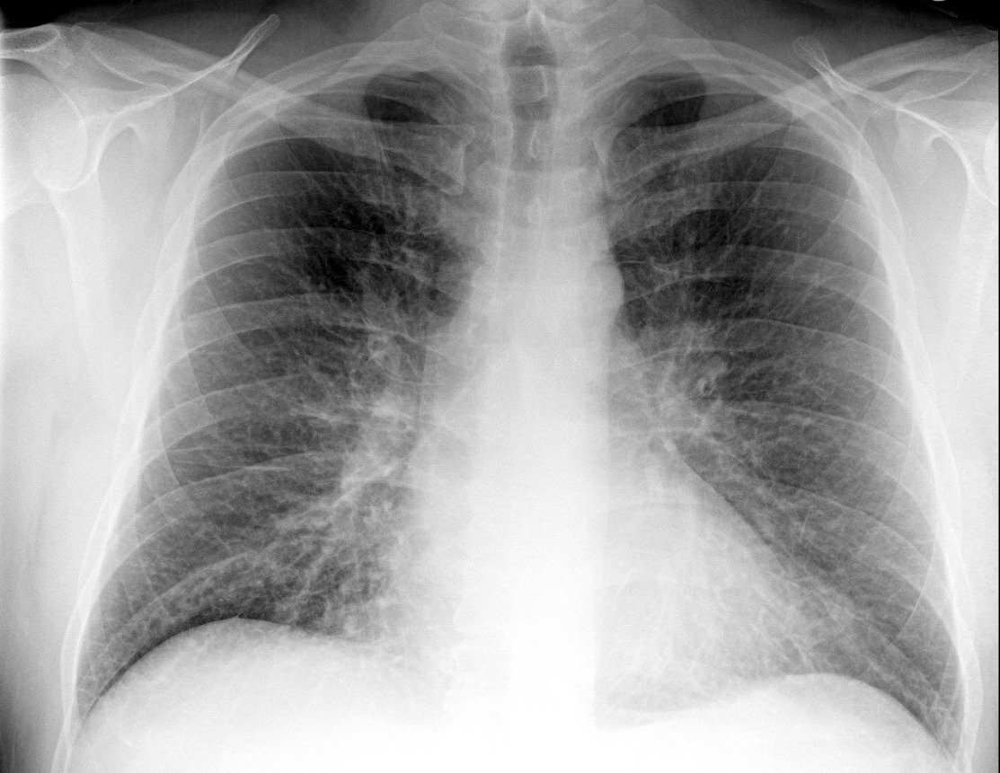
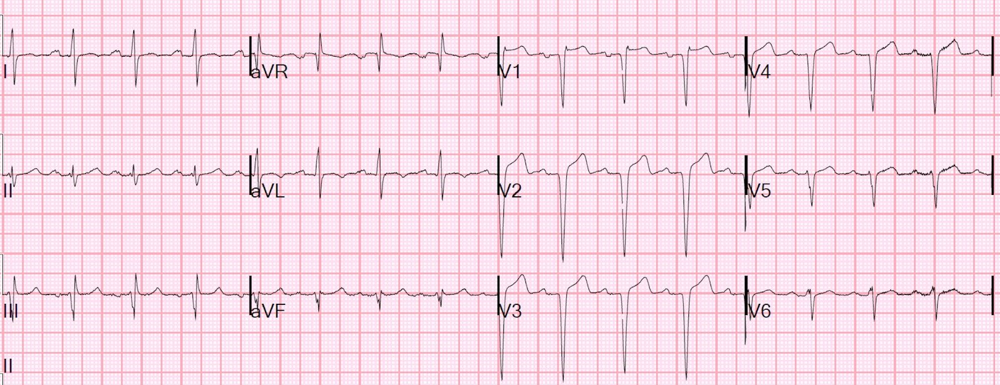
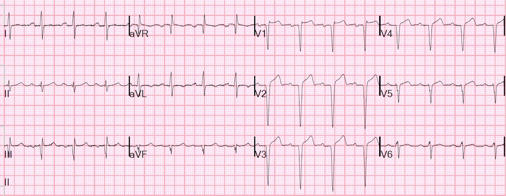
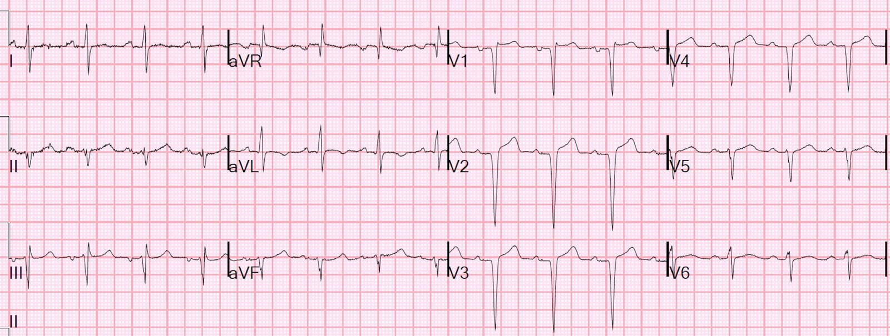
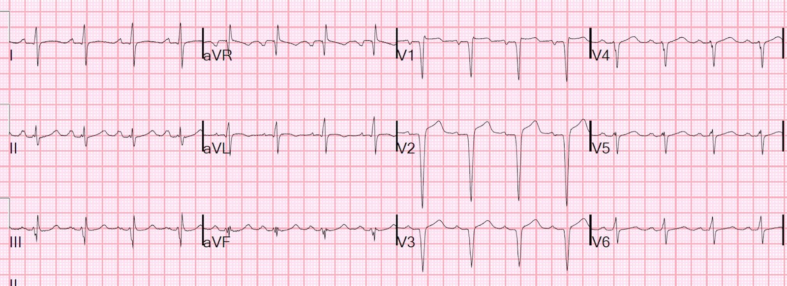
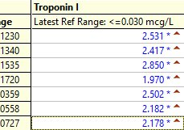
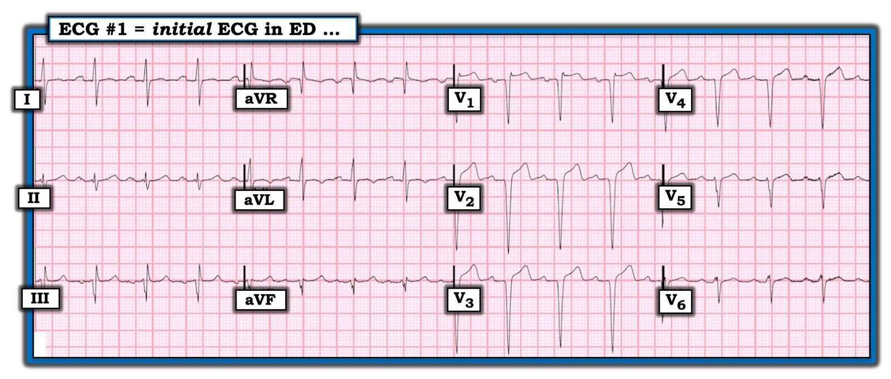

18/09/2019 — Bất thường: dùng xu hướng diễn tiến của troponin để giúp xác định nhồi máu đang tiếp diễn/tái phát hay nhồi máu đã hoàn tất
Bản dịch tiếng Việt của bài "Unusual: Troponin Trajectory to Help Determine Ongoing/Recurrent Infarction vs. Completed Infarction." – Dr. Smith’s ECG Blog. Giữ nguyên toàn bộ 10 hình ảnh và 2 video của bản gốc.
Một bệnh nhân nam 40 mấy tuổi, không có tiền sử bệnh lý gì, đến một cơ sở chăm sóc khẩn cấp (urgent care) vào cuối tuần (ê-kíp thông tim đang ở nhà) vì ho bắt đầu từ 2 tuần trước và khó thở (SOB) từ một tuần trước.
Bệnh nhân được chụp X-quang ngực:


Bác sĩ giảng viên đã làm ngay siêu âm tim và siêu âm phổi:
Nhiều đường B (nhiều khả năng là phù phổi)
Siêu âm tim mặt cắt trục ngắn cạnh ức:
Thành trước nằm gần đầu dò nhất và cho thấy rối loạn vận động thành rõ ràng
Bệnh sử bổ sung:
Bệnh nhân phủ nhận đau ngực nhưng cho biết đã có khoảng 3 cơn cảm giác đè nặng ngực, mỗi cơn kéo dài 5 phút, trong tuần qua.
Bác sĩ lo ngại trước các dấu hiệu này và cho ghi điện tâm đồ:


Tỷ số dưới 0,36 vẫn phù hợp với STEMI bán cấp.
Nó là cũ, hay là bán cấp và đang tiếp diễn? Chúng ta thường xác định điều này dựa vào đau ngực đang tiếp diễn, nhưng bệnh nhân này CHƯA BAO GIỜ đau ngực.
Điện tâm đồ trong một trường hợp “nhồi máu thành trước cũ với ST chênh lên tồn tại dai dẳng” thực sự, thường đi kèm phình thành tim, trông giống như ca phình thất trái đã được chứng minh này:

Tôi đã xây dựng và thẩm định một công thức để phân biệt phình thất trái thành trước với STEMI thành trước cấp.
Công thức này dựa trên thực tế là nhồi máu cơ tim cấp có sóng T cao và sóng T tương xứng với QRS. Nếu bất kỳ chuyển đạo nào từ V1-V4 có tỷ số T/QRS lớn hơn 0,36, thì nhiều khả năng nhất là STEMI cấp, trừ khi thời gian có triệu chứng dài hơn 6 giờ (khi ổ nhồi máu tiến triển, sóng T nhỏ dần đi).
Vậy trong ca này, khó xác định thời gian có triệu chứng vì bệnh nhân chưa bao giờ đau. Tuy nhiên, bệnh nhân đã khó thở được một tuần, nên nhiều khả năng ổ nhồi máu đã bắt đầu từ 1-2 tuần trước.
Tuy nhiên, đó là:
1) một ổ nhồi máu đã hoàn tất, nay biến chứng phù phổi? hay
2) một ổ nhồi máu nhỏ với nhiều cơ tim còn sống, nhưng bị thiếu máu cục bộ và choáng (rối loạn vận động thành), hay
3) bệnh nhân đã có một ổ nhồi máu nhỏ và nay bị tắc lại, sắp diễn tiến thành nhồi máu xuyên thành?
Sự phân biệt này cực kỳ quan trọng, vì nếu có tắc mới, tắc lại, thì cần mở thông động mạch NGAY để cứu vùng cơ tim đó. Nếu toàn bộ cơ tim đã chết, thì không có gì quá khẩn cấp.
Các sóng QS gợi ý rằng nhồi máu đã hoàn tất, nhưng sóng QS không có tính quyết định.
Thường thì có thể biết có thiếu máu cục bộ đang tiếp diễn hay không dựa vào việc có hay không có đau ngực. Nhưng bệnh nhân này chưa từng đau ngực và hiện cũng không đau ngực. Tình trạng khó thở là do phù phổi, vốn sẽ có dù có thiếu máu cục bộ đang hoạt động hay không, vì phân suất tống máu của bệnh nhân kém trong cả hai trường hợp.
Vậy làm sao để có được chút dấu hiệu về xu hướng diễn tiến?
Chúng tôi quyết định kiểm tra xu hướng diễn tiến của troponin. Thông thường đây không phải là cách chính xác để đánh giá tình trạng hiện tại của động mạch, và nếu troponin đang tăng, bạn sẽ không biết có nhồi máu đang tiếp diễn hay không (troponin tăng có thể do hoại tử đang tiếp diễn hoặc do troponin được phóng thích từ vùng cơ tim đã nhồi máu từ trước).
Tuy nhiên, nếu troponin đang giảm, thì nhiều khả năng không còn nhồi máu đang tiếp diễn.
Đây KHÔNG phải là cách tiếp cận một ca có triệu chứng cấp, vì trong những ca đó, troponin đi sau điện tâm đồ rất xa, và việc chờ troponin lần đầu, hoặc nhất là chờ troponin lần thứ 2, mất quá nhiều thời gian và sẽ dẫn đến nhồi máu không đáng có. Ví dụ, troponin lần đầu âm tính ở khoảng 50% ca STEMI. Dù lần thứ 2 hầu như luôn dương tính, đến lúc đó mọi tổn thương đã xảy ra rồi.
Troponin I lần đầu có kết quả 2,53 ng/mL.
Đây là điện tâm đồ lúc một giờ:


Troponin I lần hai có kết quả 2,417 ng/mL. Vì vậy chúng tôi quyết định có thể chờ đến ngày hôm sau mới chụp mạch vành.
Bệnh nhân được điều trị bằng nitroglycerin tĩnh mạch và furosemide.
Thậm chí việc chờ đợi có thể còn có lợi điểm nào đó, ngoài việc được làm trong giờ hành chính:
Các chỗ tắc đã tổ chức hóa qua nhiều ngày có thể khó mở thông, khó luồn dây dẫn qua.
Một số người cho rằng điều trị heparin trong 12-24 giờ trước khi chụp mạch vành giúp làm mềm huyết khối và nhờ đó giúp mở thông động mạch (Điều này do một bác sĩ tim mạch của chúng tôi truyền đạt lại. Tôi chưa từng nghe và không tìm được y văn nào về điều này. Nếu ai biết, xin hãy gửi cho tôi!)
Đây là điện tâm đồ lúc 5,5 giờ:


Điều này có nghĩa là động mạch đang mở thông không? Có thể, nhưng nhiều khả năng hơn là do huyết động cải thiện nhờ nitroglycerin và furosemide.
Đây là điện tâm đồ sáng hôm sau:


Bản ghi này thực sự trông giống phình thất trái, dù thực ra còn quá sớm để biết phình thành tim có hình thành hay không.
Diễn biến troponin


Chụp mạch vành:
Quả thật có tắc 100% LAD, và rất khó luồn dây dẫn qua. Dựa vào đặc điểm của tổn thương, bác sĩ can thiệp ước tính huyết khối đã có khoảng 2 tuần tuổi.

===================================
Bình luận của KEN GRAUER, MD (17/9/2019):
===================================
Một ca thú vị ở bệnh nhân nam khoảng 40 tuổi với phát hiện bất ngờ là nhồi máu cơ tim thành trước diện rộng gần đây — dù không hề đau ngực. Xét từ góc độ đọc điện tâm đồ — tôi cho rằng điện tâm đồ ban đầu mang lại một số điểm giảng dạy thú vị đáng được nêu ra.
- Tôi đã đăng lại điện tâm đồ tại khoa cấp cứu ban đầu này ở Hình 1. Các nhận định tuần tự của tôi như sau:


PHÂN TÍCH MÔ TẢ ĐIỆN TÂM ĐỒ #1: Bệnh nhân là nam giới khoảng 40 tuổi, trước đó khỏe mạnh, có 1-2 tuần ho và khó thở, nhưng không đau ngực.
- Tần số & Nhịp — Nhịp xoang với tần số khá nhanh, ~95/phút.
- Các khoảng (PR-QRS-QT ) — Theo cách đo của tôi — khoảng PR dài nhất thấy ở chuyển đạo I = 0,22 giây, phù hợp với blốc AV độ 1. Đánh giá độ rộng QRS là việc khó. Lý do là phức bộ QRS ở các chuyển đạo V2, V3 và V4 rõ ràng trông rộng hơn bình thường. Dù vậy, phức bộ QRS không kéo dài quá nửa ô lớn ở bất kỳ chuyển đạo nào (tức là không quá 0,10 giây) — nghĩa là QRS hẹp. QTc trông bình thường (rõ ràng ngắn hơn một nửa khoảng R-R).
- Trục — Trục trung bình trên mặt phẳng trán là không xác định! Đó là vì, ngoài chuyển đạo aVF (chủ yếu âm) — phức bộ QRS ở 5 chuyển đạo chi còn lại hầu như đẳng điện.
- Lớn các buồng tim — Không có! Điểm này cũng dễ gây nhầm — vì sóng S quá sâu ở các chuyển đạo trước thường là dấu hiệu của LVH. Dù vậy — lý do sóng S ở các chuyển đạo trước sâu như vậy trên bản ghi này nhiều khả năng không phải do LVH, mà là do mất sóng R ở các chuyển đạo trước vì nhồi máu gần đây. ĐIỂM THEN CHỐT (PEARL): Khó chẩn đoán LVH trên điện tâm đồ khi có nhồi máu thành trước — vì 2 tình trạng này tạo ra các lực đối nghịch nhau. Nghĩa là, LVH rõ (với biên độ sóng R tăng ở các chuyển đạo bên, và sóng S sâu hơn ở các chuyển đạo trước) có thể làm giảm (hoặc thậm chí mất) sóng r ở các chuyển đạo trước trên điện tâm đồ. Theo cùng lý lẽ đó — mất các lực khử cực hướng ra trước (tức là mất sóng r ở các chuyển đạo trước) do nhồi máu cơ tim thành trước có thể làm sóng S ở các chuyển đạo trước sâu hơn, giống LVH.
Thay đổi Q–R–S–T:
- Sóng Q ở các chuyển đạo thành dưới ? — Tôi đã nhìn rất lâu vào các chuyển đạo thành dưới, cố xác định XEM có sóng Q nào ở thành dưới hay không. Tôi tin là không có. Dường như có một sóng lệch dương nhỏ ban đầu ở chuyển đạo II (mà tôi sẽ mô tả là phức bộ rR’S). Dường như có các sóng r ban đầu nhỏ-nhưng-có-thật (sóng lệch dương) ở cả chuyển đạo III và aVF. Tôi sẽ mô tả hình thái phức bộ QRS ở chuyển đạo III và aVF là phù hợp với dạng rSR’ (hoặc rSr’). Về mặt kỹ thuật — việc không có sóng Q rõ ràng ở các chuyển đạo thành dưới nghĩa là chúng ta không thể chắc chắn chẩn đoán nhồi máu thành dưới cũ. ĐIỂM THEN CHỐT (PEARL): Xét bối cảnh lâm sàng của ca này — dạng rR’ bất thường ở chuyển đạo II + sóng r ban đầu không lớn hơn mức rất nhỏ ở chuyển đạo III và aVF + khía (phân mảnh) ở sườn xuống của sóng S ở chuyển đạo aVF, ở bệnh nhân có nhồi máu cơ tim thành trước diện rộng, gần đây này, có thể đóng vai trò một hình ảnh “tương đương nhồi máu trên điện tâm đồ” ở các chuyển đạo thành dưới. Tôi nghi ngờ bệnh nhân bị tắc hoàn toàn LAD này nhiều khả năng có LAD “vòng qua mỏm” (wraparound), dẫn đến tổn thương cả thành dưới vào thời điểm nhồi máu.
- Sóng Q ở các chuyển đạo thành trước ? — CÓ! Có dạng Qr ở chuyển đạo V1 (có lẽ phản ánh blốc nhánh phải không hoàn toàn kèm nhồi máu cơ tim thành trước?). Như Dr. Smith đã nêu ở trên — có các phức bộ QS sâu ở các chuyển đạo V2 đến V4. Sóng R cuối cùng xuất hiện ở chuyển đạo V5 và V6 — nhưng các sóng r này RẤT NHỎ (với sóng r ban đầu bị phân mảnh ở chuyển đạo V6). ĐIỂM THEN CHỐT (PEARL): Việc thấy các phức bộ QS sâu ở nhiều chuyển đạo trước không chỉ điểm nhồi máu cũ nếu có LBBB hoàn toàn. Ngược lại — chúng ta chờ đợi thấy sóng r nhỏ, nếu không nói là không có, ở các chuyển đạo trước khi có rối loạn dẫn truyền này. Nhưng dù “trông rộng” — phức bộ QRS ở các chuyển đạo V2 đến V4 không kéo dài quá nửa ô lớn — nghĩa là phức bộ QRS trên bản ghi này không rộng, và không có blốc nhánh. Vì ở đây không có blốc nhánh — hình dạng QRS ở các chuyển đạo trước tim do đó cho phép chẩn đoán nhồi máu thành trước (trước-bên) diện rộng vào một thời điểm nào đó.
- Thay đổi ST-T — Như Dr. Smith đã nêu, sóng ST-T ở các chuyển đạo V1 đến V4 trông cao hơn mức chờ đợi. Về mặt định tính — tôi cho rằng HÌNH DẠNG của các sóng ST-T này không trông cấp tính (tức là thay vì dạng vòm — các sóng ST-T này lõm lên rõ ràng). Ngoài ra — bản ghi này không có ST chênh xuống soi gương thực sự (tôi nghĩ sóng T đảo ngược nông đơn độc ở aVL có lẽ không phải cấp tính). ĐIỂM THEN CHỐT (PEARL): Dù “trực giác” của tôi cho rằng thay đổi ST-T trên điện tâm đồ ban đầu tại khoa cấp cứu này trông không cấp tính — điều quan trọng là phải nhận thấy có đủ mức ST chênh lên bất ngờ để buộc phải có thông tin bổ sung trước khi đưa ra bất kỳ kết luận nào. Các điều cần cân nhắc gồm: i) Chú trọng vào bệnh sử (tức là KHÔNG đau ngực — nhưng khó thở tăng dần, điều có thể phù hợp với nhồi máu cơ tim thành trước xảy ra 1-2 tuần trước đó); ii) Tìm điện tâm đồ cũ (tôi không nghĩ là có sẵn bản nào); iii) Kiểm tra “xu hướng diễn tiến của troponin” (đã được Dr. Smith bàn luận chi tiết ở trên); và, iv) Làm rõ giải phẫu bằng thông tim.
Chúng tôi xin CẢM ƠN Dr. Smith đã trình bày ca bệnh mang tính giáo dục này!